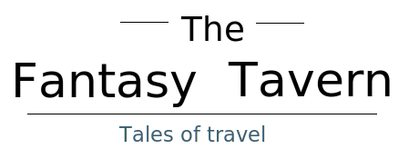

-

-

- 
-

-

Curse of the Macbook Boys,
a Curse of Strahd Adventure!
A Prologue
The sun begins to set into the mountains behind this small town, the sounds of chirping birds echoing through the streets. A group of three odd characters exit the tavern with a look of determination. “So we’re really going to find him another fantasy Macbook huh?” says, one of the characters. A tall tiefling women with eyes the color of shining emerald , Hair tangled, wavy, and dark as obsidian that contrast her almost ghostly pale skin complexion. “Hmm I guess” the half orc murmurs in deep grunting voice. “Well you did break it in the first place!’ A human paladin responds.After traveling the day, they spark up a fire and pitch their tents to rest for the night. As they talk over this mysterious flyer that all brought them together to the same tavern. Gonnar take notice to the fog surrounding their campsite. A thick white fog creeps closer surrounding the camp on all sides and eventually consuming the camp entirely. Gonnar reaches through the fog grabbing hold of Nemeia and Mike pulling them closer. As they stand huddled together they’re overcome with the feeling of falling, as if their world had just been flipped over entirely. They gasp for breathes and heave with nausea from this intense feeling as the fog disperses, it seems the trees have lost their leaves as the branches twist and contort in an unsettling fashion.

Rose and Thorn
“Well I guess we should probably see what’s going on, we’re clearly not in the same forest” says the paladin. They make their way toward what they believe to be north. Eventually they come across a road made of dirt and gravel leads to a village, its tall houses dark as tombstones. Nestled among these solemn dwellings are a handful of closed-up shops. A soft whimpering draws their eye toward a pair of children standing in the middle of an otherwise lifeless street. A young boy and an older girl, about seven and ten respectively, pale in skin tone but dressed in elegant purples and reds. The boy has, grasped tightly in his hands, a small doll. After shushing the boy, the girl turns and says “There’s a monster in our house!” She points to a tall brick row house that has seen better days. Its has a gated portcullis on the ground floor and a rusty gate hangs slightly ajar. The house on either side are boarded up and look to be abandoned. Nemeia leans over and says in a hushed tone to Gonar, “I like the tall one, can I make her my slave?” “Maybe we should find out about this monster first.” Gonar responds followed by a swift sigh of disappointment by Nemeia. Mike approaches and asks the kids,“So what’s the deal with this monster?” The small boy responds in a cracked and unconfident tone, “H-he lives in the basement and we can hear him, it sounds like this-” Thorn recreates a sound somewhere between a screaming roar and a pained groaning. They look at eachother with looks of skepticism. “Gonnar doesn’t care!” as he tries to pick up Thorn. Grasping for the boy, his hands push through him as Thorn’s form twists and turns into fog. Roses body also dissipates into fog which now surrounds the players inching closer forcing them into the house or be consumed by the fog